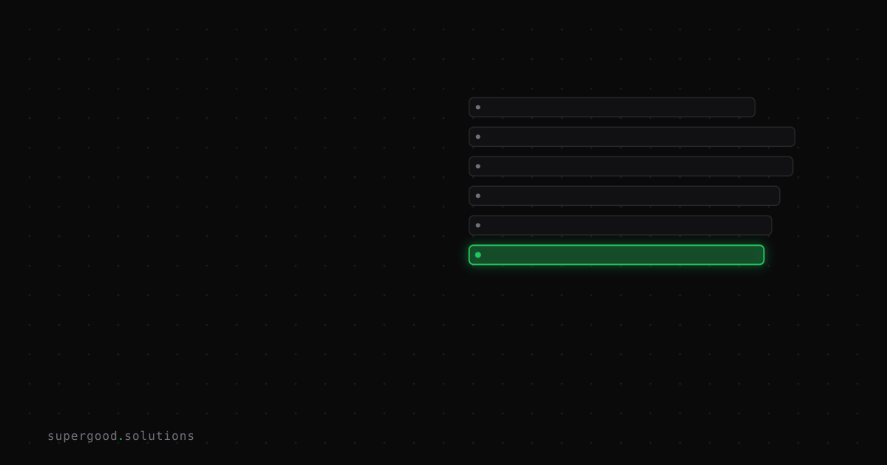

Your Private Repos Are an Agent Permission Boundary Problem
TL;DR: Enterprise IAM was designed assuming a human at the keyboard. When you give an AI agent access to a private repo, you're not granting "read access to code" — you're handing the agent a screwdriver next to every config file, secret, and instruction set your other agents rely on. Most security teams haven't caught up to this yet.
Key Insight
The standard mental model for repo access goes like this: grant least privilege, scope tokens to the repos that matter, rotate them regularly. Problem solved.
But that model breaks when the actor is an agent, not a human.
Security researcher Johann Rehberger's cross-agent privilege escalation research demonstrated this precisely: a coding agent with normal file access can write to .mcp.json, .claude/settings.local.json, AGENTS.md, or .vscode/copilot-instructions.md — which are effectively the permission boundaries of every other agent running on the same repo. One compromised agent can "free" another by rewriting its config, injecting instructions, or adding a malicious MCP server. No elevated API permissions required. Just write access to a directory.
The attack surface isn't your GitHub token scope. It's the entire file tree.
Why Teams Miss This
IAM teams think about agent access the same way they think about service account access: what APIs can it call, what S3 buckets can it read, what repos can it clone. Those are the right questions for a passive consumer.
Agents are not passive consumers. They are read-write participants in a shared filesystem that also contains the configuration for every other agent on your stack.
When you add GitHub Copilot, Claude Code, and a CI agent to the same repo, you've created a mesh of agents that can all influence each other's instruction sets and tool configurations — not via any formal coordination protocol, but because they all read and write to the same directories. The file system is the coordination layer, and it has no access control for agent-to-agent influence.
The Agent Commander research makes the threat model concrete: once one agent in your mesh is compromised via indirect prompt injection — say, it reads a malicious PR comment or processes a poisoned document — it can persistently rewrite the instructions for every other agent in the repo. The attacker never needs shell access. They need one LLM call to succeed.
Enterprise IAM was never designed for this. There's no scope: read:file-except-dot-mcp-json in your OAuth grant.
How to Actually Do It
Fixing agent permission boundaries requires thinking at the file level, not the API level:
1. Isolate agent config directories
Treat .claude/, .mcp.json, AGENTS.md, .vscode/copilot-instructions.md, and similar files as security-critical assets. Add them to your repo's protected files list and fail PRs that touch them without an explicit reviewer.
# .github/CODEOWNERS — protect agent config
/.claude/ @security-team
/.mcp.json @security-team
/AGENTS.md @security-team
/.vscode/copilot-instructions.md @security-team2. Scope agents to read-only where possible
If a CI analysis agent doesn't need to write anything back to the repo, give it a token that can't. This sounds obvious, but most setups hand agents full write access because it's easier to configure once.
3. Audit cross-agent instruction drift
Diff agent config files in your CI pipeline. If AGENTS.md or .claude/settings.local.json changed between commits without a human-authored commit touching them, that's a flag.
# In your CI — detect unexpected agent config changes
git diff origin/main -- AGENTS.md .mcp.json .claude/ .vscode/copilot-instructions.md4. Assume indirect prompt injection is a live threat
If any agent in your pipeline reads external content — PR body text, issue comments, documents, web pages — that input can contain adversarial instructions. Treat it as untrusted input entering a privileged execution environment, because that's what it is.
What We've Learned
The framing shift that actually helps: stop thinking of an AI agent as a user with an access level. Think of it as a process running in your repo's filesystem with full write access to all configuration. Then ask whether your security model was designed for that process.
For most organizations, the answer is no — and the gap between "we scoped the GitHub token correctly" and "we've secured agent access" is wider than it looks.
Start with the CODEOWNERS gate. It's the fastest control you can add without changing your agent setup, and it immediately creates a human checkpoint for the highest-value attack surface.
Sources
- Cross-agent privilege escalation research: embracethered.com — Cross-Agent Privilege Escalation: When Agents Free Each Other
- Agent Commander C2 research: embracethered.com — Agent Commander: Promptware-Powered Command and Control
- GitHub Copilot indirect prompt injection: embracethered.com — GitHub Copilot: Remote Code Execution via Prompt Injection
- AWS Kiro arbitrary code execution: embracethered.com — AWS Kiro: Arbitrary Code Execution via Indirect Prompt Injection